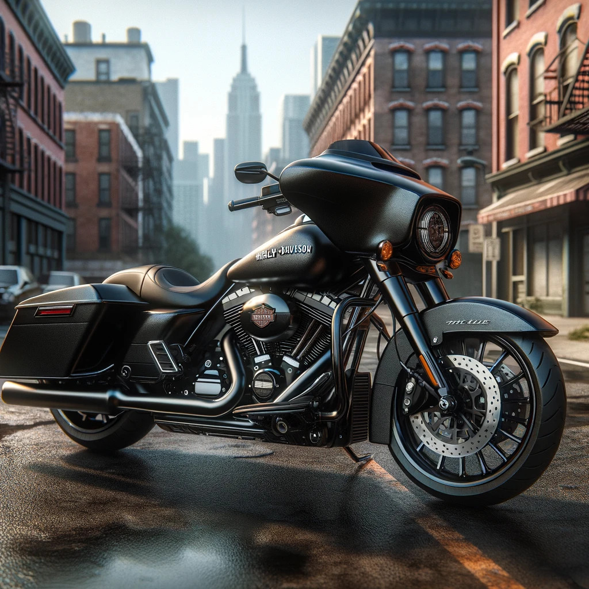

Mi Harley y yo
|  |
¡Hey amigo! ¿Sabías que tengo una Harley Davidson del 2019? ¡Es una máquina increíble! Déjame contarte un poco sobre ella. Esta moto es todo un clásico moderno. Desde el momento en que la enciendes, sientes esa potencia auténtica y esa sensación de libertad que solo una Harley puede ofrecer. Primero, hablemos del estilo. ¡Es impresionante! Tiene ese aspecto robusto y musculoso que te hace girar la cabeza en cada semáforo. Además, la atención al detalle es espectacular. Cada curva, cada línea, está diseñada con precisión para hacer que esta moto destaque entre la multitud. Y no puedo dejar de mencionar el sonido. ¡Oh, ese rugido característico del motor! Es música para mis oídos. Cada vez que acelero, siento esa vibración que te recorre el cuerpo y te hace sentir vivo. Pero no todo se trata de apariencia y sonido. Esta Harley del 2019 también viene equipada con lo último en tecnología y comodidad. Desde sistemas de navegación hasta asientos ergonómicos que te hacen sentir como en casa en cada viaje largo. Y hablando de viajes, ¿sabías que es perfecta tanto para paseos cortos por la ciudad como para aventuras épicas en carretera abierta? Sí, es versátil así. Te lleva a donde quieras ir con estilo y confiabilidad. En resumen, mi Harley Davidson del 2019 no es solo una moto, es mi compañera de aventuras. Me hace sentir libre, poderoso y emocionado cada vez que me subo a ella. ¡Es una experiencia que no tiene precio! ¡Así que la próxima vez que estés pensando en una aventura en dos ruedas, ya sabes a quién llamar! ¡Te aseguro que será una experiencia que nunca olvidarás! Además del estilo y la emoción que te conté, déjame sumergirte un poco en las especificaciones técnicas de mi Sport Glide del 2019. Esta bestia está equipada con un motor Milwaukee-Eight 107, ¡sí, escuchaste bien, 107 pulgadas cúbicas de pura potencia! Eso se traduce en una entrega de potencia suave y constante que te impulsa hacia adelante con una autoridad que te deja sin aliento. Y si hablamos de manejabilidad, esta moto es una joya. Su chasis rígido y estable, combinado con una suspensión delantera invertida y un ajuste de suspensión trasera ajustable, te brinda un manejo ágil y preciso en cualquier tipo de carretera. Es como si la moto leyera tu mente y respondiera a cada uno de tus movimientos con gracia y confianza. Pero espera, hay más. La Sport Glide está diseñada para adaptarse a cualquier situación. Con su sistema de maletas desmontables, puedes pasar fácilmente de un aspecto más deportivo a uno más turístico en cuestión de segundos. ¡Es como tener dos motos en una! Y no te preocupes por la comodidad. El asiento de dos niveles y el manillar ajustable te permiten encontrar la posición perfecta para esos viajes largos en carretera. Además, con características como el control de crucero electrónico y el sistema de información y entretenimiento Boom! Box, puedes disfrutar del viaje sin preocuparte por nada más que sentir el viento en tu cara. En resumen, mi Sport Glide del 2019 no es solo una moto, es una obra maestra de ingeniería y diseño. Combina estilo, rendimiento y versatilidad de una manera que ninguna otra moto puede igualar. Es el compañero perfecto para cualquier aventura en carretera, y estoy emocionado de compartir cada momento a su lado. ¡Así que, ¿qué dices? ¿Listo para subirte y dejar que la Sport Glide te lleve a nuevas alturas de emoción y libertad? |